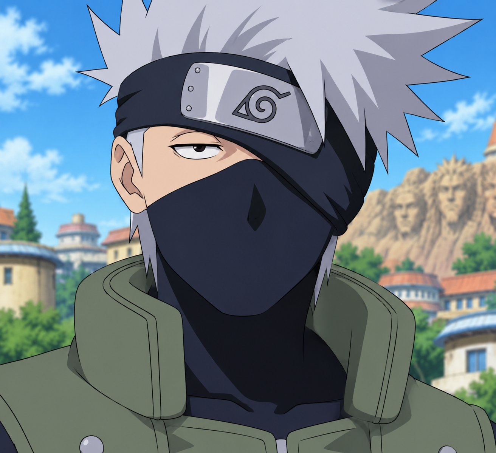
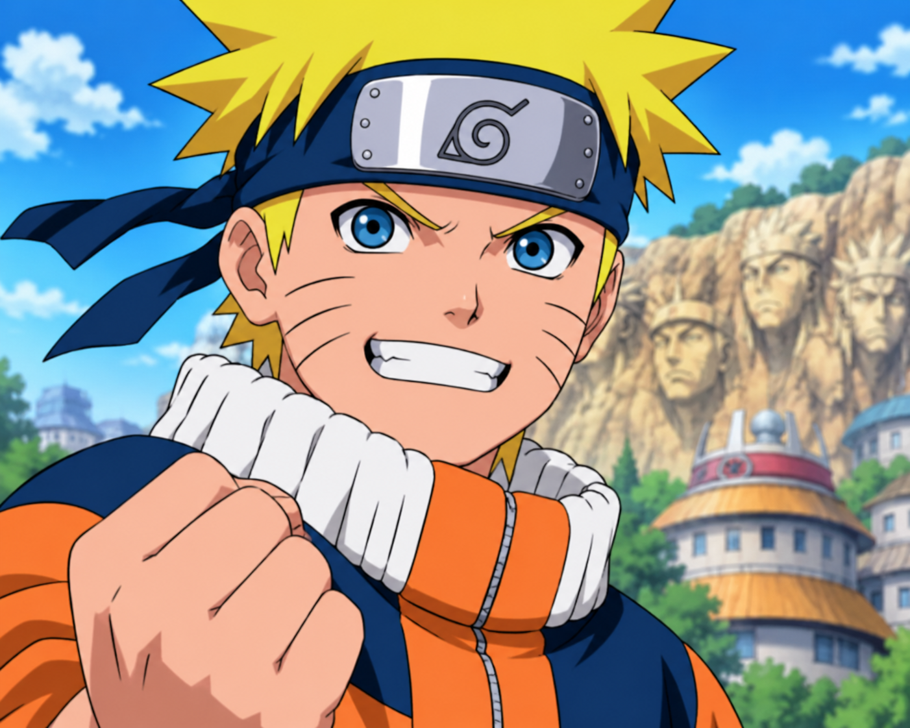
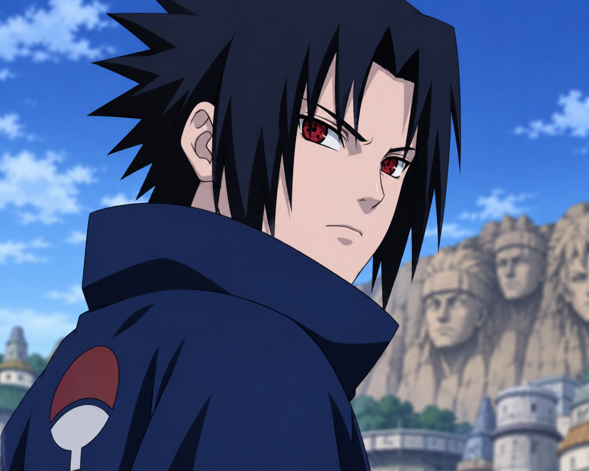
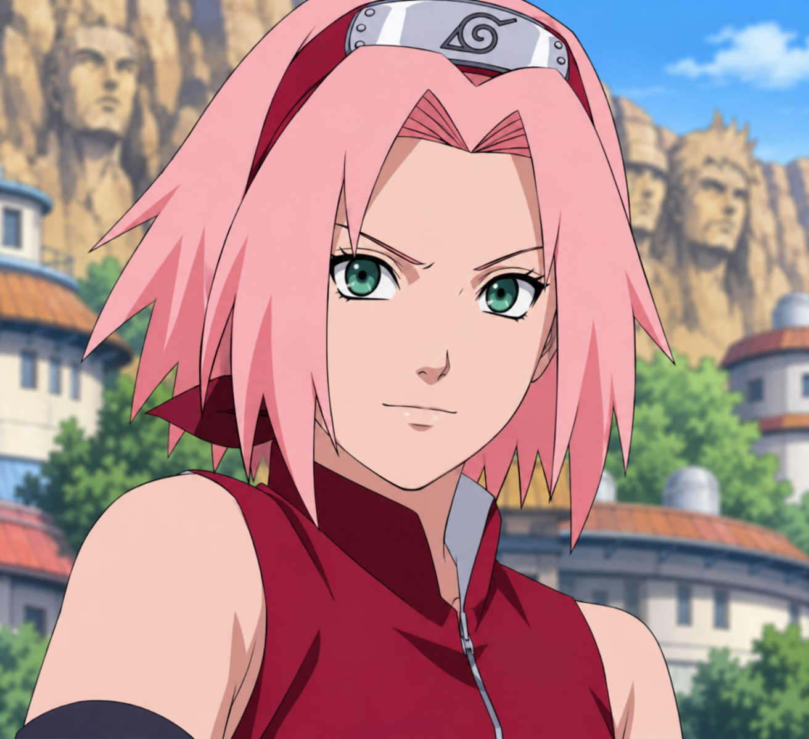

l'équipe 7 est constituée de Kakashi hatake, Naruto Uzumaki, Sasuke Uchiwa et de Sakura Haruno.
Kakashi Hatake est un ninja d'élite, et le chef de l'équipe 7, ce qui fait de lui l'un des premier mentor des protagoniste.

Naruto Uzumaki est l'hote du démon renard à neuf queues qui avait attaqué le village de Konoha, donc les villageois le déteste. Il veut devenir Hokage pour avoir le respect de tous.

Sasuke Uchiwa est un jeune ninja talentueux issu du célèbre clan Uchiwa. Solitaire et marqué par la disparition de sa famille, il cherche à devenir plus puissant afin de venger son clan.

Sakura Haruno est une kunoichi intelligente, déterminée et courageuse. Après être devenue l'élève de Tsunade, elle développe une force physique exceptionnelle et devient une excellente ninja médicale. Elle est très attachée à ses amis, notamment Naruto et Sasuke.
